library(sf)
library(terra)
library(tmap)
library(dplyr)
library(geodata)
library(kableExtra)Harjutus seminar R
1. Loeme paketid mällu
2. SISSE LUGEMINE
Loeme sisse kõik kasutatavd andmefailid- punktid csv failist
eestipunktid=read.csv2("punktid.csv",row.names = 1)- soomaa shp
soomaavektor=st_read("soomaa.shp")Reading layer `soomaa' from data source
`C:\Users\oscar94\Documents\PhD\Spatial_practical\Practical-Works-on-Spatial-Analysis-of-Ecological-Data-\Lab1\soomaa.shp'
using driver `ESRI Shapefile'
Simple feature collection with 1 feature and 8 fields
Geometry type: POLYGON
Dimension: XY
Bounding box: xmin: 551837.3 ymin: 6465092 xmax: 578888.6 ymax: 6493387
Projected CRS: Estonian Coordinate System of 1997- raster paketi asemel kasutame paketti terra ja seal on ‘rast’.
R-i pakettidega on paljud rasterandmed ka otse kättesaadavad. Siin kasutame paketti geodata Eesti kõrgusandmete jaoks.
korgusraster=elevation_30s('Est',"Lab1/") 3. STRUKTUURID
Uurime sisse laetud objekte
str(eestipunktid)'data.frame': 1101 obs. of 5 variables:
$ Longitude : chr "27.1034944219769" "26.5125696953139" "26.1604047173088" "24.8714500421875" ...
$ Latitude : chr "57.725905786046" "58.4365138707273" "58.431001331598" "58.7442375957994" ...
$ Esri_label : chr "Trees" "Trees" "Trees" "Trees" ...
$ Corine_label: chr "Coniferous forest" "Mixed forest" "Broad-leaved forest" "Mixed forest" ...
$ hfi : int 10 7 2 10 3 4 10 12 16 3 ...eestipunktid[1:2,] Longitude Latitude Esri_label Corine_label hfi
1 27.1034944219769 57.725905786046 Trees Coniferous forest 10
2 26.5125696953139 58.4365138707273 Trees Mixed forest 7soomaavektor[1,]Simple feature collection with 1 feature and 8 fields
Geometry type: POLYGON
Dimension: XY
Bounding box: xmin: 551837.3 ymin: 6465092 xmax: 578888.6 ymax: 6493387
Projected CRS: Estonian Coordinate System of 1997
sys_id versioon id nimi tyyp kr_kood valitseja
1 810 1.637187e+12 2949 Soomaa rahvuspark KRP KLO1000269 Keskkonnaamet
aluskaart geometry
1 Eesti Põhikaart 1:10 000 POLYGON ((573380.2 6481773,...class(korgusraster)[1] "SpatRaster"
attr(,"package")
[1] "terra"korgusrasterclass : SpatRaster
dimensions : 312, 816, 1 (nrow, ncol, nlyr)
resolution : 0.008333333, 0.008333333 (x, y)
extent : 21.6, 28.4, 57.4, 60 (xmin, xmax, ymin, ymax)
coord. ref. : lon/lat WGS 84 (EPSG:4326)
source : EST_elv_msk.tif
name : EST_elv_msk
min value : -1
max value : 284 plot(eestipunktid$Longitude,eestipunktid$Latitude)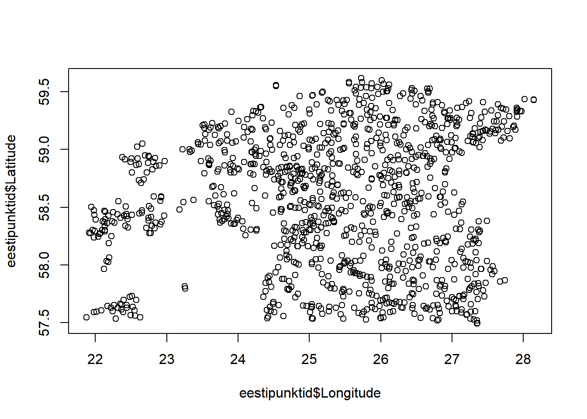
plot(korgusraster)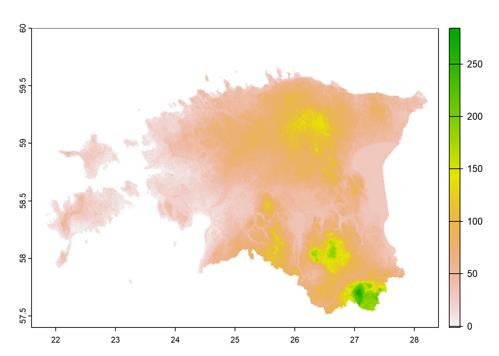
4. KOORDINAATSÜSEEMID
Uurime nende objektide koordinaatsüsteeme
st_crs(eestipunktid)Coordinate Reference System: NAst_crs(soomaavektor)Coordinate Reference System:
User input: Estonian Coordinate System of 1997
wkt:
PROJCRS["Estonian Coordinate System of 1997",
BASEGEOGCRS["EST97",
DATUM["Estonia 1997",
ELLIPSOID["GRS 1980",6378137,298.257222101,
LENGTHUNIT["metre",1]]],
PRIMEM["Greenwich",0,
ANGLEUNIT["degree",0.0174532925199433]],
ID["EPSG",4180]],
CONVERSION["Estonian National Grid",
METHOD["Lambert Conic Conformal (2SP)",
ID["EPSG",9802]],
PARAMETER["Latitude of false origin",57.5175539305556,
ANGLEUNIT["degree",0.0174532925199433],
ID["EPSG",8821]],
PARAMETER["Longitude of false origin",24,
ANGLEUNIT["degree",0.0174532925199433],
ID["EPSG",8822]],
PARAMETER["Latitude of 1st standard parallel",59.3333333333333,
ANGLEUNIT["degree",0.0174532925199433],
ID["EPSG",8823]],
PARAMETER["Latitude of 2nd standard parallel",58,
ANGLEUNIT["degree",0.0174532925199433],
ID["EPSG",8824]],
PARAMETER["Easting at false origin",500000,
LENGTHUNIT["metre",1],
ID["EPSG",8826]],
PARAMETER["Northing at false origin",6375000,
LENGTHUNIT["metre",1],
ID["EPSG",8827]]],
CS[Cartesian,2],
AXIS["northing (X)",north,
ORDER[1],
LENGTHUNIT["metre",1]],
AXIS["easting (Y)",east,
ORDER[2],
LENGTHUNIT["metre",1]],
USAGE[
SCOPE["Topographic mapping (large scale)."],
AREA["Estonia - onshore and offshore."],
BBOX[57.52,20.37,60,28.2]],
ID["EPSG",3301]]st_crs(korgusraster)Coordinate Reference System:
User input: WGS 84
wkt:
GEOGCRS["WGS 84",
ENSEMBLE["World Geodetic System 1984 ensemble",
MEMBER["World Geodetic System 1984 (Transit)"],
MEMBER["World Geodetic System 1984 (G730)"],
MEMBER["World Geodetic System 1984 (G873)"],
MEMBER["World Geodetic System 1984 (G1150)"],
MEMBER["World Geodetic System 1984 (G1674)"],
MEMBER["World Geodetic System 1984 (G1762)"],
MEMBER["World Geodetic System 1984 (G2139)"],
ELLIPSOID["WGS 84",6378137,298.257223563,
LENGTHUNIT["metre",1]],
ENSEMBLEACCURACY[2.0]],
PRIMEM["Greenwich",0,
ANGLEUNIT["degree",0.0174532925199433]],
CS[ellipsoidal,2],
AXIS["geodetic latitude (Lat)",north,
ORDER[1],
ANGLEUNIT["degree",0.0174532925199433]],
AXIS["geodetic longitude (Lon)",east,
ORDER[2],
ANGLEUNIT["degree",0.0174532925199433]],
USAGE[
SCOPE["Horizontal component of 3D system."],
AREA["World."],
BBOX[-90,-180,90,180]],
ID["EPSG",4326]]Küsime arvutilt, kas on sama. ‘==’ tähendab küsimust.
st_crs(soomaavektor)==st_crs(korgusraster) [1] FALSETeeme koordinaatidest geograafilised punktid.
Funktsioon: st_as_sf()
eestipunktid_sf=st_as_sf(eestipunktid,coords=c("Longitude","Latitude"))
class(eestipunktid_sf)[1] "sf" "data.frame"Määrame eestipunktidele koordinaatsüsteemi, kasutades funktsiooni st_crs(), rahvusvaheline kood on 4326:
st_crs(eestipunktid_sf)=4326Loogiline selekteerimine
plot(eestipunktid_sf[eestipunktid_sf$hfi<5,"hfi"])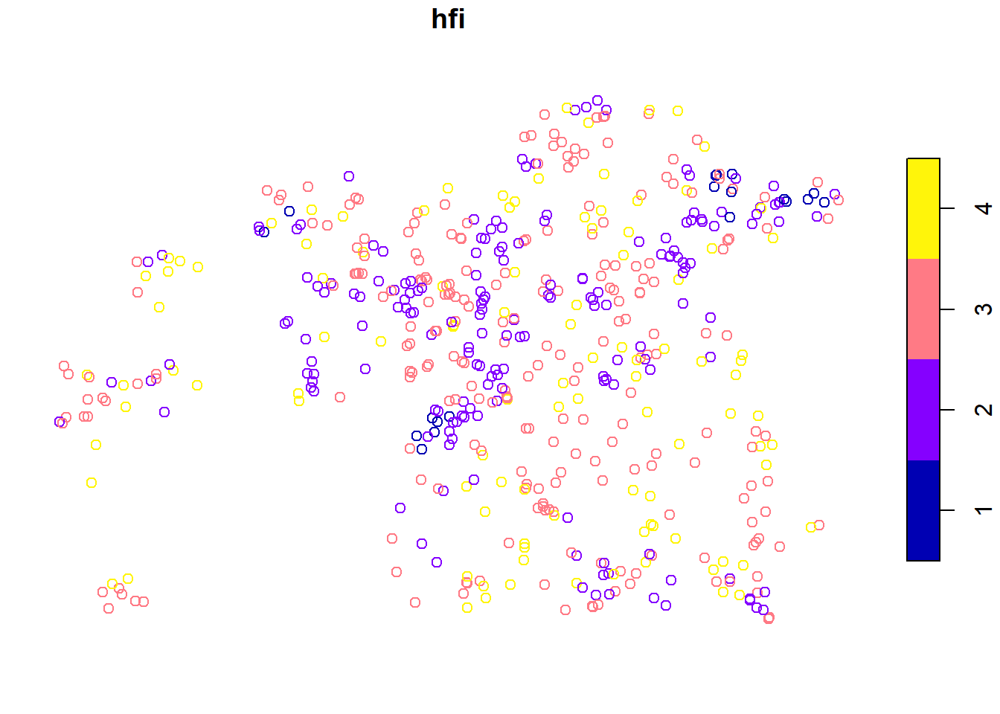
5. PLOTTIMINE
Vaatame punkte paketiga t-map
m1=tm_basemap("OpenStreetMap")+
tm_shape(eestipunktid_sf) +tm_dots("Esri_label")
leaflet=tmap_leaflet(m1)
show(leaflet)Mis valesti läks? Kuidas parandada? Parandame eespool ära ja proovime uuesti.
Katsetame veel plottimisega
plot(eestipunktid_sf) 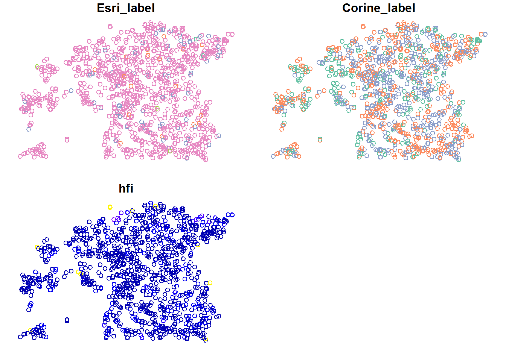
miks tuleb mitu plotti? Kuidas saada ainult üks?
Vaatame ka ilusamat eesti kaarti
m2=tm_basemap("https://tiles.maaamet.ee/tm/tms/1.0.0/foto@GMC/{z}/{x}/{y}.png",tms=T)+
tm_shape(eestipunktid_sf) + tm_dots("Esri_label")
leaflet=tmap_leaflet(m2)
show(leaflet)6. PUNKTID POLÜGONI SEES
Leiame kõik punktid, mis jäävad soomaa rahvuspargi sisse
soomaal=st_intersection(eestipunktid_sf,soomaavektor) Mis valesti? Parandame ära. Proovime mõlemat pidi
Funktsioonid st_transform() ja project(), eesti koordinaatsüsteemi kood on 3301:
soomaavektor=st_transform(soomaavektor,crs=st_crs(eestipunktid_sf))Funktsioon st_intersection()
soomaal=st_intersection(eestipunktid_sf,soomaavektor) Warning: attribute variables are assumed to be spatially constant throughout
all geometriesArvutame Soomaa rahvuspargi pindala, lisame selle tabelisse
Funktsioon st_area
All sf functions Simple Features for R
pindala=st_area(soomaavektor)
soomaavektor$pindala=pindala
pindala396390516 [m^2]Vaatame ainult soomaa punkte t-map paketiga, lisame ka soomaa piirjoone, nii et punktid välja paistaksid
m3=tm_basemap("https://tiles.maaamet.ee/tm/tms/1.0.0/foto@GMC/{z}/{x}/{y}.png",tms=T)+
tm_shape(soomaavektor)+tm_polygons(col="lightblue")+
tm_shape(soomaal) + tm_dots(col="darkblue",size=0.1)
leaflet=tmap_leaflet(m3)
show(leaflet)7. FILTREERIMINE
Filtreerime punktid, mille Esri_label on “Crops”
Kõigepealt vaatame, mitu sellist punkti üldse on tabelis
table(eestipunktid_sf$Esri_label)
Built Area Crops Rangeland Trees Water
2 17 70 1008 3 Ära unusta seda koma! (see näitab, et valida tuleb kõik veerud)
crops=eestipunktid_sf[eestipunktid_sf$Esri_label=="Crops",] length(crops) [1] 4Miks ei ole 17?
nrow(crops) [1] 18Miks ikka ei ole 17?
Teine variant paketiga dplyr
crops=filter(eestipunktid_sf,Esri_label=="Crops") #ei kaasa NA ridu
plot(crops$geometry)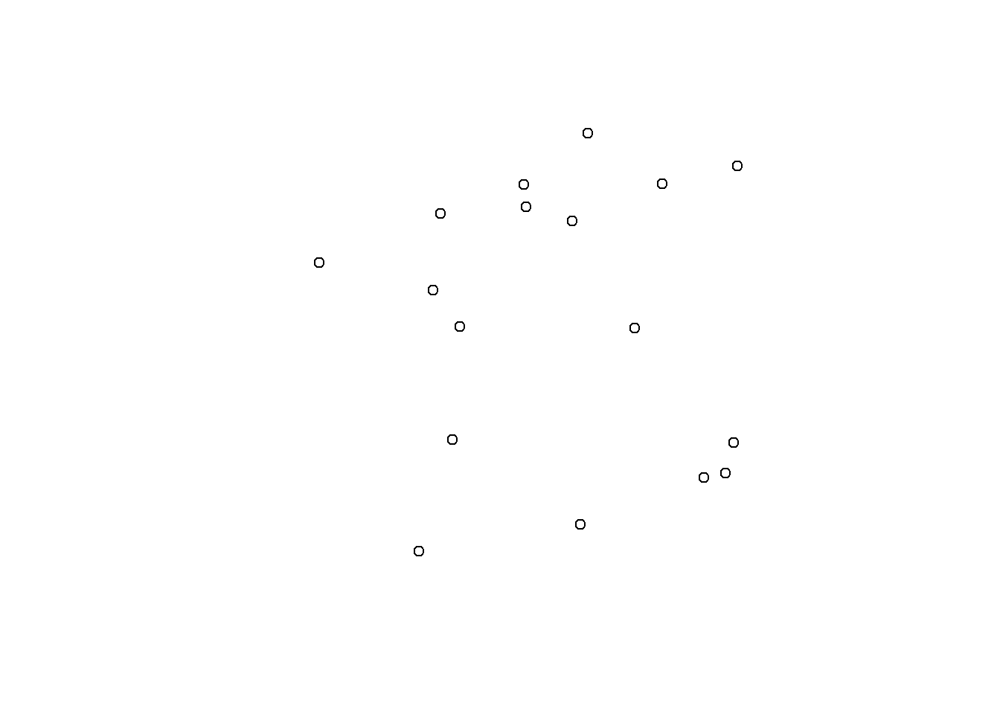
class(crops) #jääb samaks, mis algsel objektil[1] "sf" "data.frame"st_crs(crops)==st_crs(eestipunktid_sf) #jääb alles[1] TRUE8. PUHVRID
Teeme 10 esimesele ‘crops’ punktile 5 km puhvrid ümber
Pakett saab ise aru, et tahame meetreid, mitte kraade
puhv=st_buffer(crops[1:10,],25000)
plot(puhv)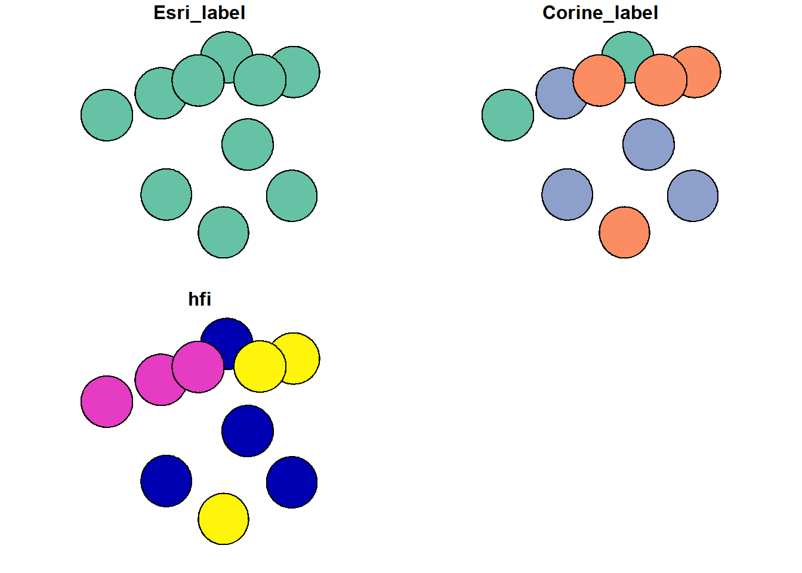
Arvutame puhvrite pindala funktsiooniga st_area ja lisame selle veeru:
pindalad=st_area(puhv)
puhv$area=pindalad
pindalad Units: [m^2]
[1] 1985434432 1987425149 1985697078 1986691439 1986552854 1986710448
[7] 1986061527 1985964042 1987088286 1986416580Vaatame paketiga t-map kaarti, värvime veeru “hfi” ehk human footprint indexi järgi,lisame parameetri alpha, et alad veidi läbi paistaksid
m4=tm_basemap("https://tiles.maaamet.ee/tm/tms/1.0.0/foto@GMC/{z}/{x}/{y}.png",tms=T)+
tm_shape(puhv) +tm_polygons("hfi",alpha=0.8)+
tm_shape(soomaavektor)+tm_polygons(col="lightblue")
leaflet=tmap_leaflet(m4)
show(leaflet)9. KATTUVUSED RASTRI JA VEKTORI VAHEL
Leiame ala, kus puhvrite objekt kattub soomaaga
st_intersection
kattuvus=st_intersection(puhv,soomaavektor)Warning: attribute variables are assumed to be spatially constant throughout
all geometriesplot(kattuvus$geometry)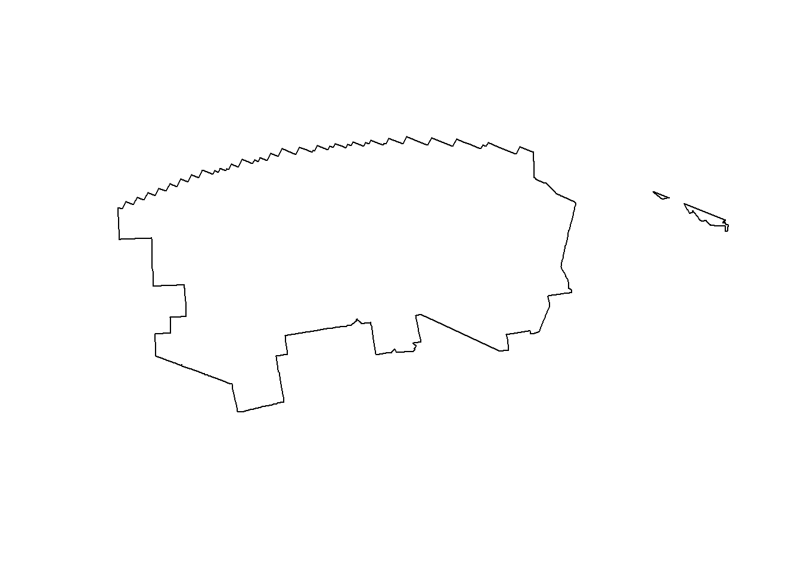
10. RASTERANDMED
Kasutades enne sisse laetud kõrgusandmeid,leiame keskmise kõrguse soomaa rahvuspargis.
Esmalt kontrollime, kas kihtide crs ühtib:
st_crs(soomaavektor)==st_crs(korgusraster)[1] TRUELõikame kõrgusrasteri väiksemaks (ei ole tegelikult päringu tegemiseks vajalik)
soomaakorgus=crop(korgusraster,soomaavektor)
plot(soomaakorgus)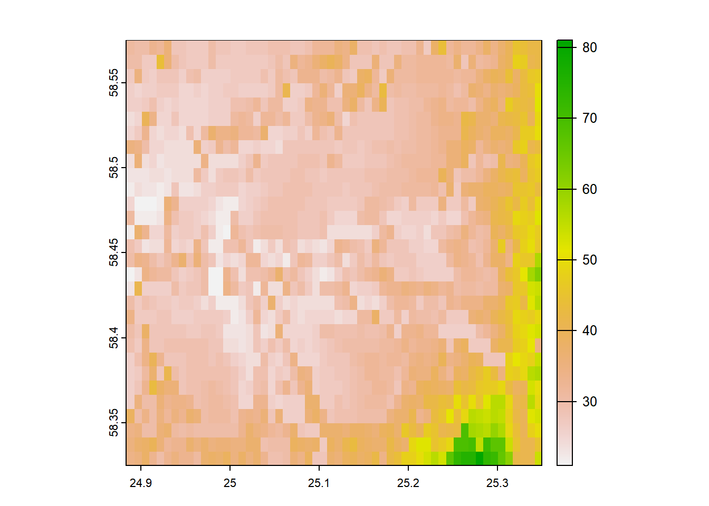
soomaakorgus=mask(korgusraster,soomaavektor)
plot(soomaakorgus) 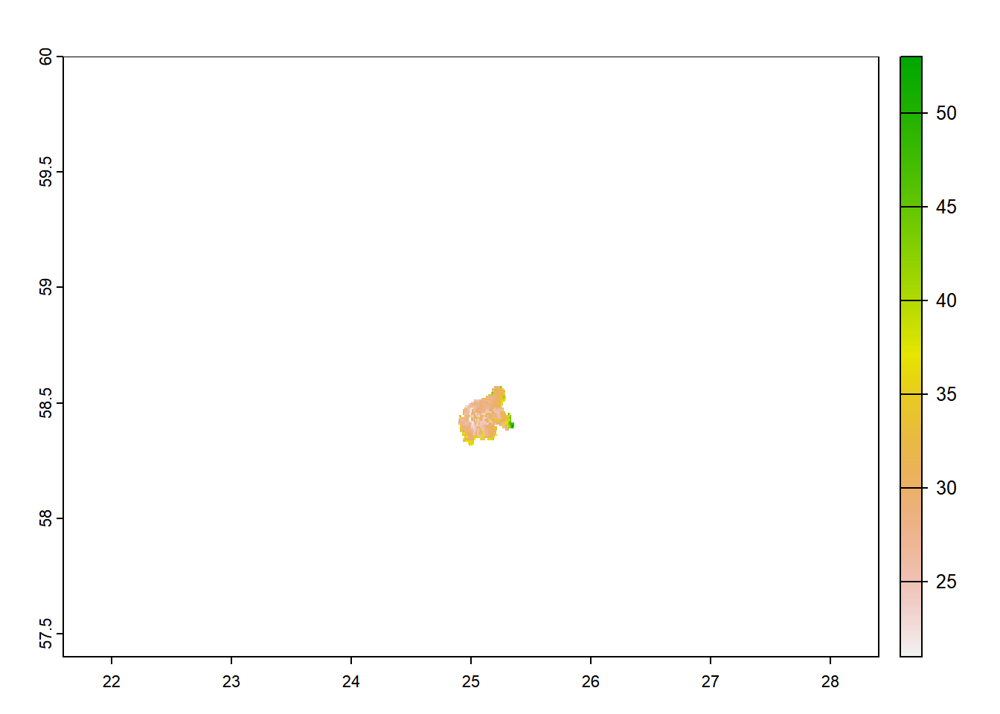
Mida need funktsioonid erinevalt teevad?
Küsime väärtused soomaa rahvuspargi piirides
soomaakorgused=unlist(terra::extract(korgusraster,soomaavektor))
hist(soomaakorgused,50)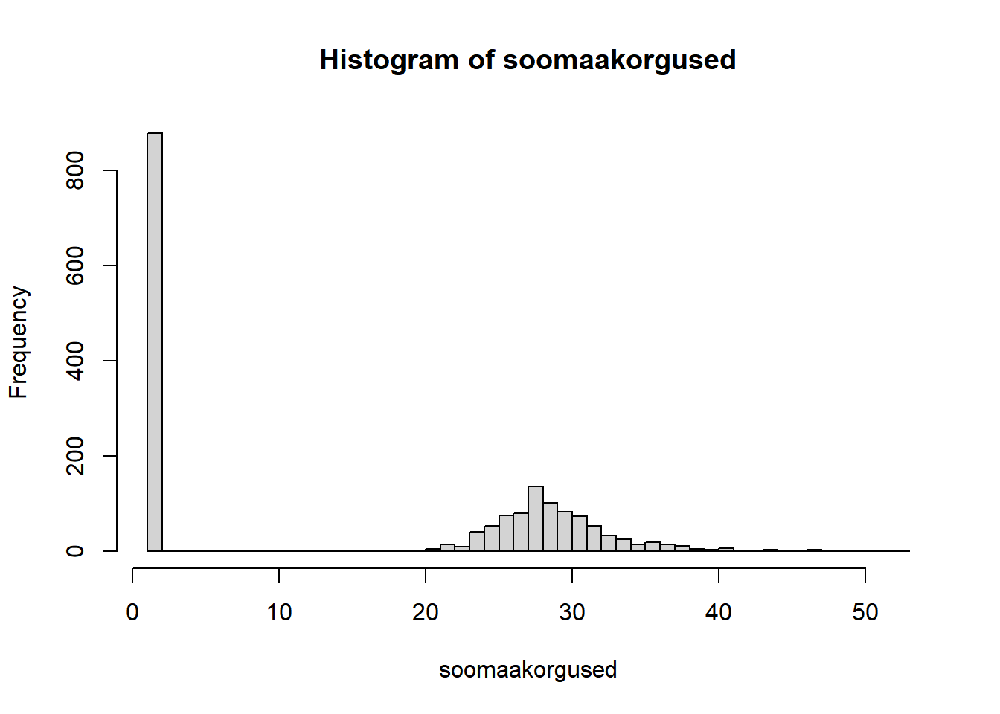
mean(soomaakorgused)[1] 15.23462Vaatame kaarti ka
m5=tm_basemap("https://tiles.maaamet.ee/tm/tms/1.0.0/foto@GMC/{z}/{x}/{y}.png",tms=T)+
tm_shape(soomaavektor)+tm_borders(col="red")+
tm_shape(soomaakorgus)+tm_raster()
leaflet=tmap_leaflet(m5)
show(leaflet)Muudame rasterkihi väärtusi – nagu maatriksiga töötamine.
Millised alad jäävad vee alla, kui merepind tõuseb 20 m?
korgusraster.uus=korgusraster > 20
plot(korgusraster.uus)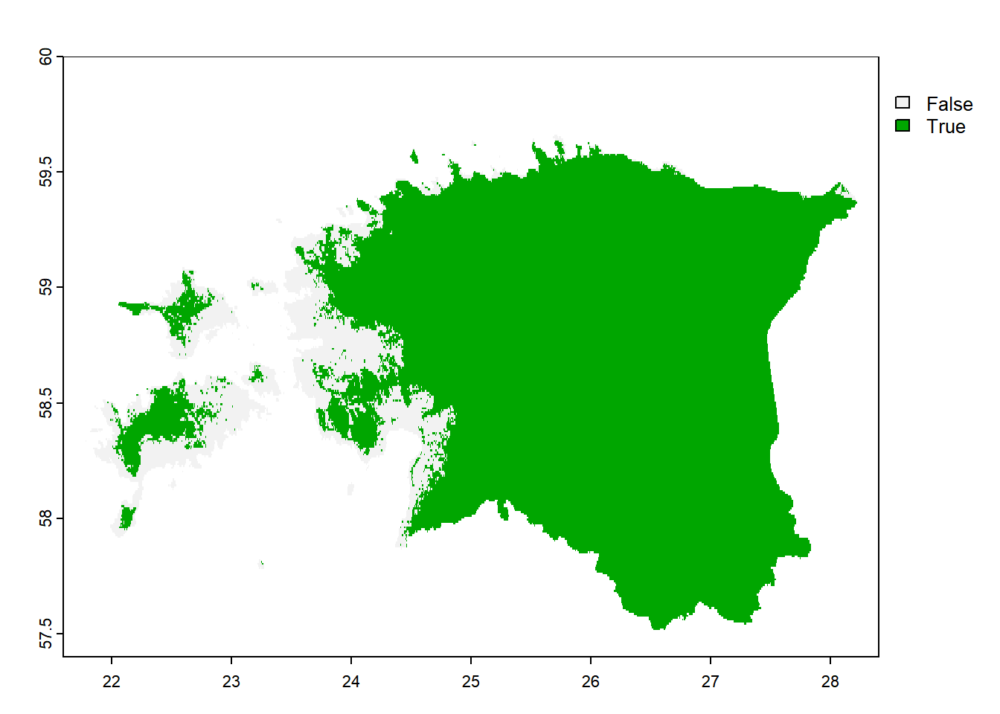
Kauguse arvutus punkti(de)st, tulemuseks uus rasterkiht
kaugus_crop_punktidest=distance(korgusraster,crops)
|---------|---------|---------|---------|
=========================================
plot(kaugus_crop_punktidest)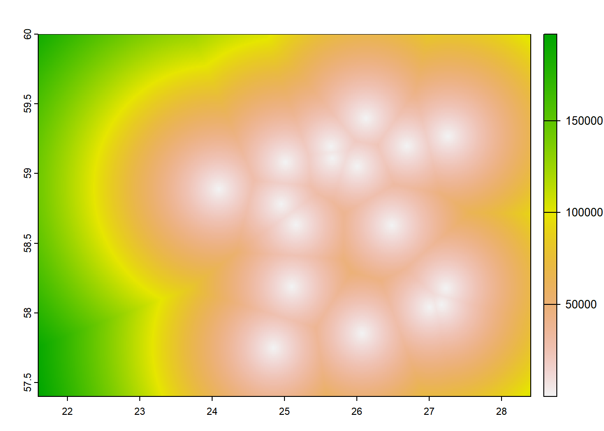
kaugus_crop_punktidest[is.na(korgusraster)]=NA
plot(kaugus_crop_punktidest)
plot(crops,add=TRUE,pch=16)Warning in plot.sf(crops, add = TRUE, pch = 16): ignoring all but the first
attribute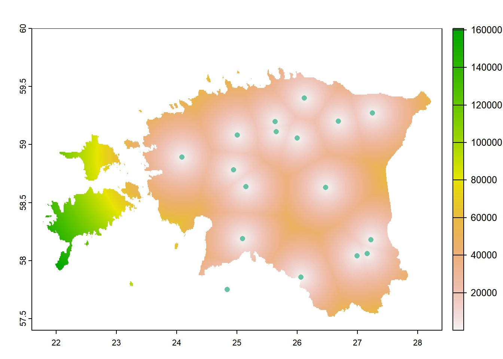
Salvestame uue rasterkihi
writeRaster(kaugus_crop_punktidest,"kaugus_crop_punktidest.tif", overwrite = T)